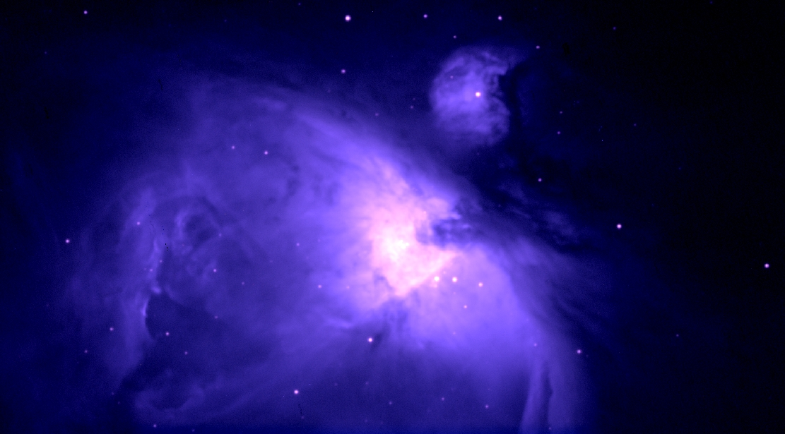

| Home | Research | Teaching | Outreach | Astrophoto | CV |
Brett M. Morris |
Astrophotography |
6 Astrodon-B, 5 Astrodon-G, and 6 Astrodon-R images stacked for a total exposure time of 34 minutes. Observed on September 19, 2012 at the University of Maryland Observatory on a 178mm Astro-Physics refractor. Color rendered in SAO DS9.
10 Hα, 10 SII, 10 OIII images stacked for a total exposure time of 30 minutes. Observed on November 17, 2011 at the University of Maryland Observatory on a 152mm Astro-Physics refractor (telescope courtesy of Elizabeth Warner). Color rendered in SAO DS9.
15 Hα, 10 SII, 10 OIII images stacked for a total exposure time of 24 minutes. Observed on October 21, 2011 at the University of Maryland Observatory on a 152mm Astro-Physics refractor (telescope courtesy of Elizabeth Warner). Color rendered in SAO DS9.